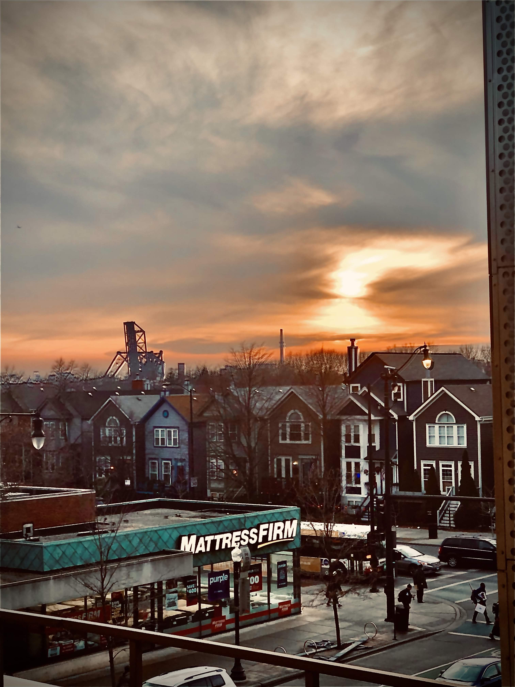
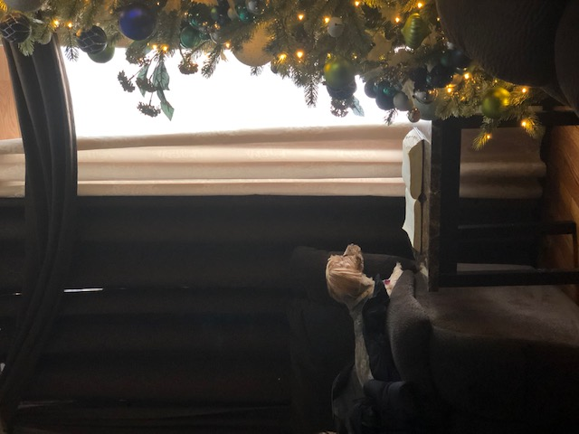

Contact
- Email: gpasillas@hawk.iit.edu
- Phone Number: xxx-xxx-xxxx
Skills
- State Seal of Bi-Literacy (English and Spanish)
- Problem Solving Skills
- Sales techniques
- Interpersonal Communication
- Writing and Verbal Communicational skills
- Time Management
Education
- Illinois Institute of Technology (2019-Current)
- Curie High School IB Diploma (2015-2019)
Community Service
- Tech Novation App Creation
- Build-On Organization
- Greater Chicago Food Depository
Goals
- Creative photographer offering expertise in sales and marketing, customer service, product promotion, administrative processes and project management. Optimistic, creative and hardworking collaborator looking to join a passionate team in efforts to provide an overall positive store experience.

